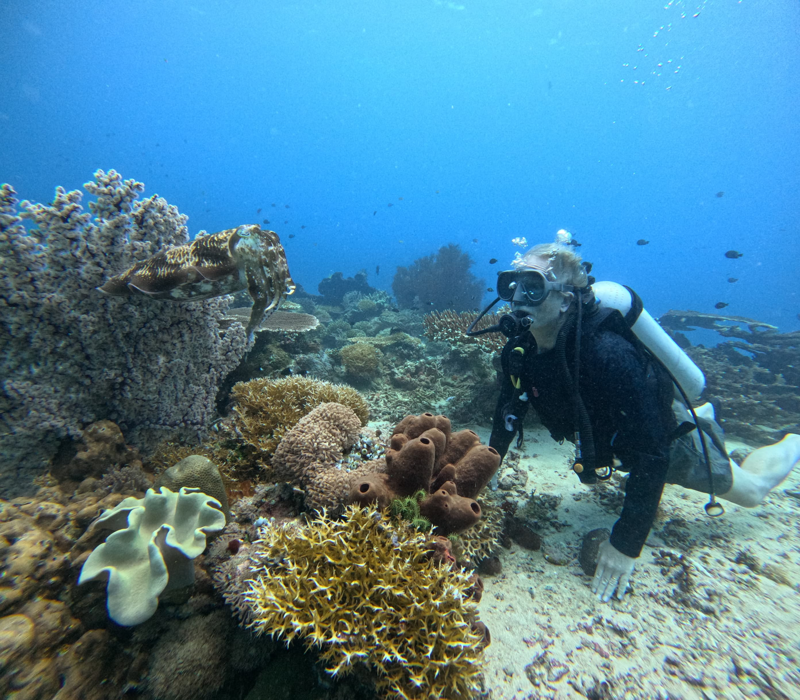

Introduction
A Hidden Paradise
A Hidden Paradise
in East Borneo
The Derawan Archipelago is a cluster of islands nestled in Berau Regency, East Kalimantan. Renowned for its breathtaking underwater world, these islands are home to thousands of marine species — from green sea turtles and stingless jellyfish to giant manta rays. Each island weaves together natural splendour, indigenous wisdom, and lasting conservation.
Discover the Islands

World Class
Biodiversity
Hotspot
Biodiversity
Hotspot